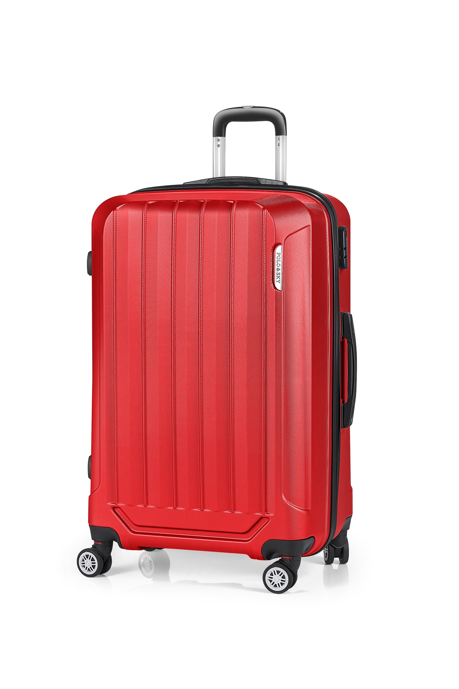
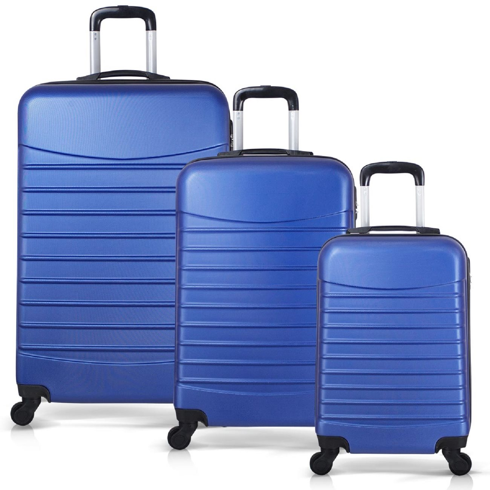
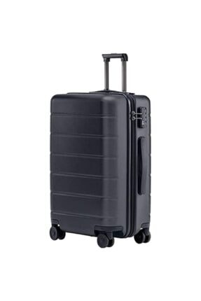

Bagaj Haklarınız
  {kind=link}
{kind=link}
{kind=link}
Sayın Yolcularımız; "BİLET ALAN HER YOLCUNUN (GÜVENLİĞİNİZ AÇISINDAN) 30 KG'MI GEÇMEMEK KOŞULU İLE EN FAZLA İKİ ADET BAGAJ HAKKI VARDIR." Güvenliğiniz için eşyanızı bagaja kendiniz teslim ediniz ve mutlaka bagaj fişinizi isteyiniz. Kayıp eşya ödemeleri bagaj fişi verildiği halde kaybolan bagajlar içindir. Kıymet takdiri yapılmayan valiz vs eşyaların kaybı halinde en fazla bilet ücretinin iki katı ödeme yapılır. Yolcularımız için tanınan ücretsiz bagaj hakkı 30 kg mı aşmamak koşulu ile 2 (iki)adettir. Fazlası ücrete tabidir. Bagaja teslim edilmeyen eşyaların (otobüs içinde, koltuk üstü raflarda, koltuk filesinde unutulması, kayıp ve çalınması durumunda tüm mesuliyet yolcunun kendisine aittir. Şehir içi servis araçlarında ve Terminallerimizde emanet olarak bırakılan, unutulan, başka bagajla karışan, çalınan eşyaların tüm mesuliyeti yolcunun kendisine aittir. TAŞINAMAZLAR Bagajın içerisinde : Kırılabilir eşya ve bozulabilir madde, Akıcı ve kokucu madde, büyük ebatlı parça,Cep Telefonu, Elektronik cihaz, Müzik aleti, İlaç, Değerli eşya (para, mücevherat, ticari ve kıymetli doküman, pasaport, kimlik vb.) Tehlikeli madde (ateşli silah, mermi, yanıcı, kimyasal nitelikli madde v.s.)gibi eşyaların taşınması ve kaybı durumunda; maddi ve manevi zararından firmamız sorumlu değildir. "KarayollarıTaşımaYönetmeliği: Madde.50: a ) Yurtiçi ve uluslar arası taşımalarda yolcunun 30 kg. a kadar olan bagajı ücretsiz taşınır. Bagajlar yolcuların biletlerinde gösterilen koltuk numaralarına göre etiketlenir. b ) Taşıtın içinde canlı hayvan hiçbir zaman taşınmaz"